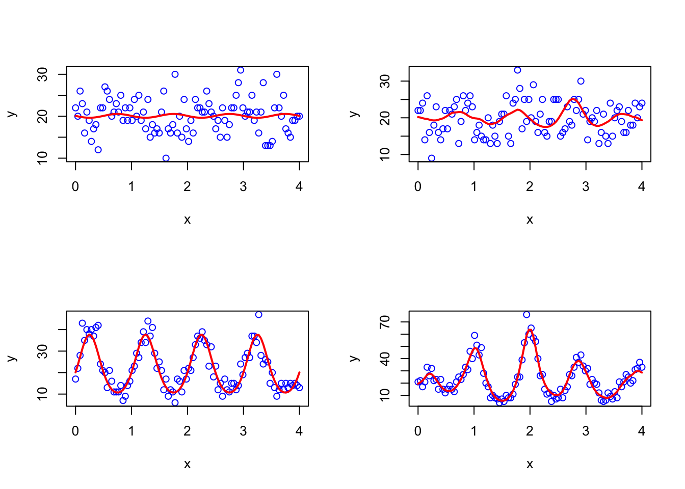
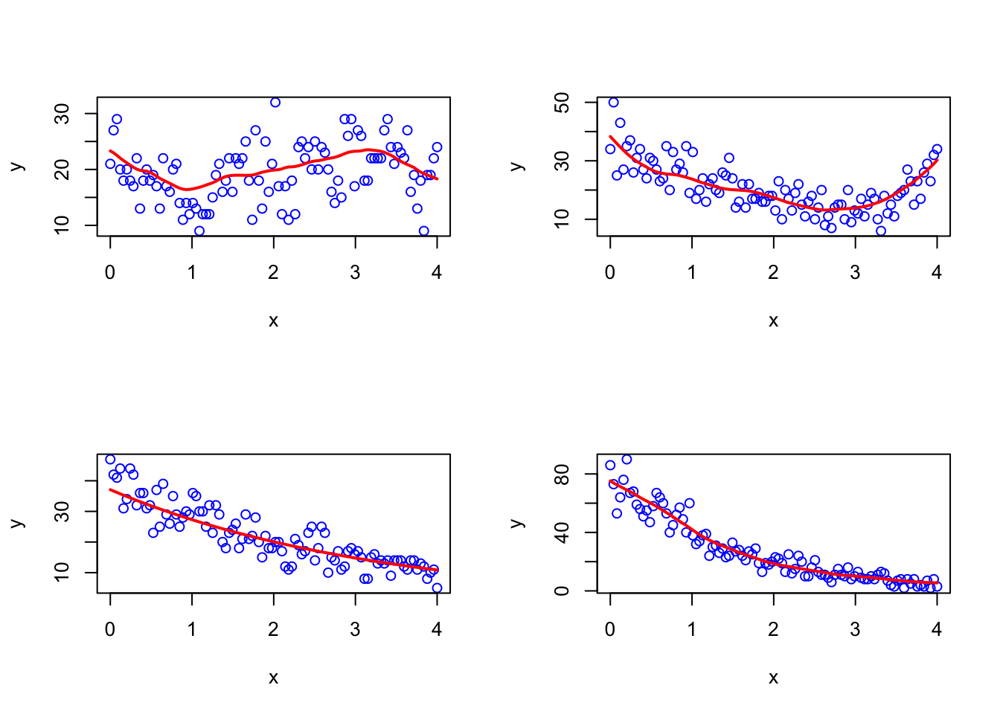
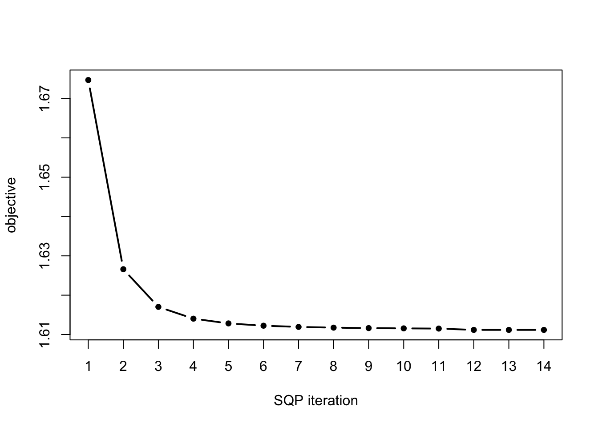
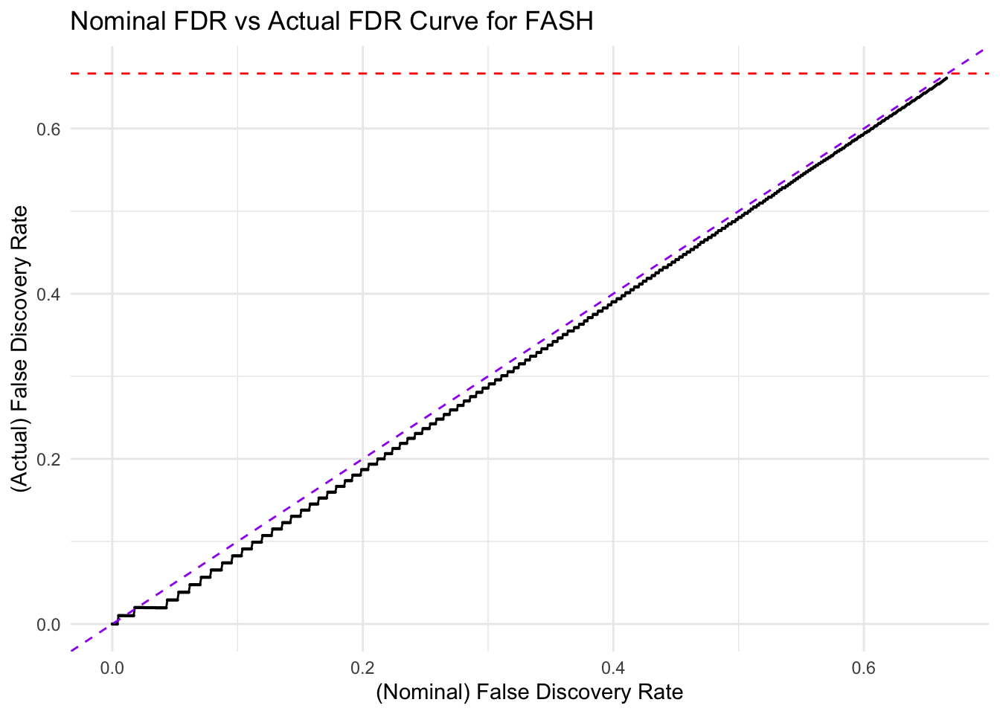
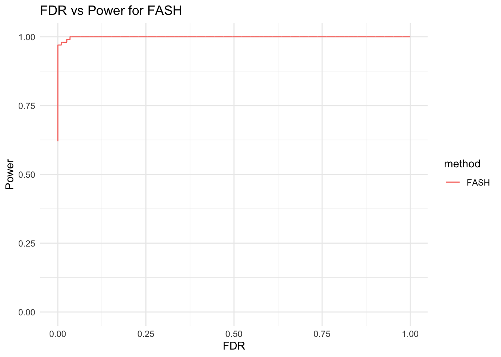
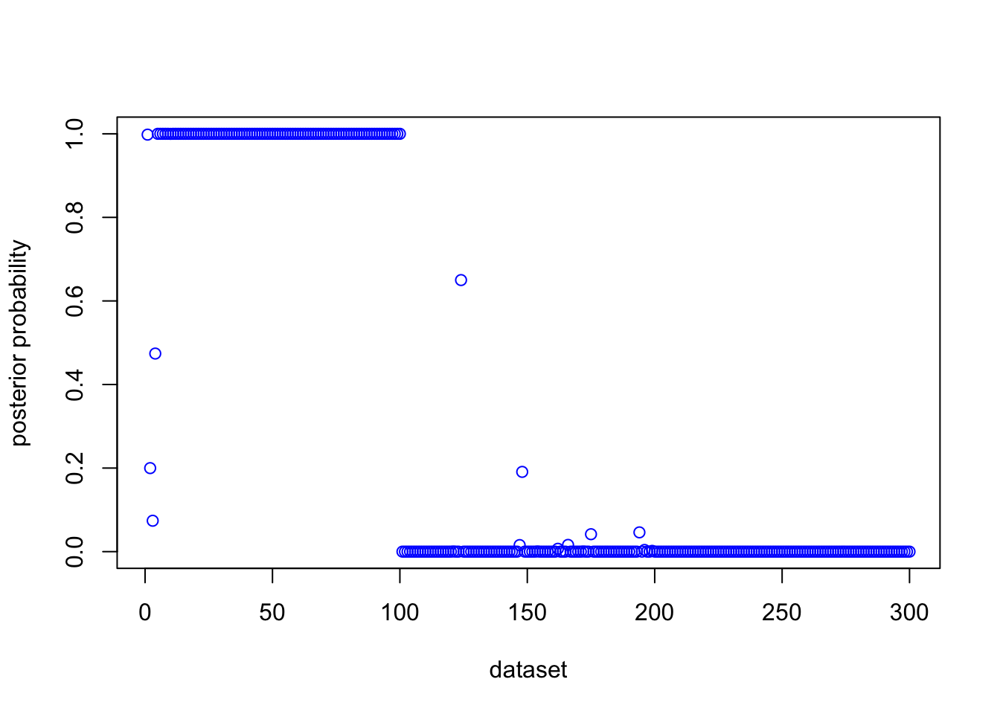
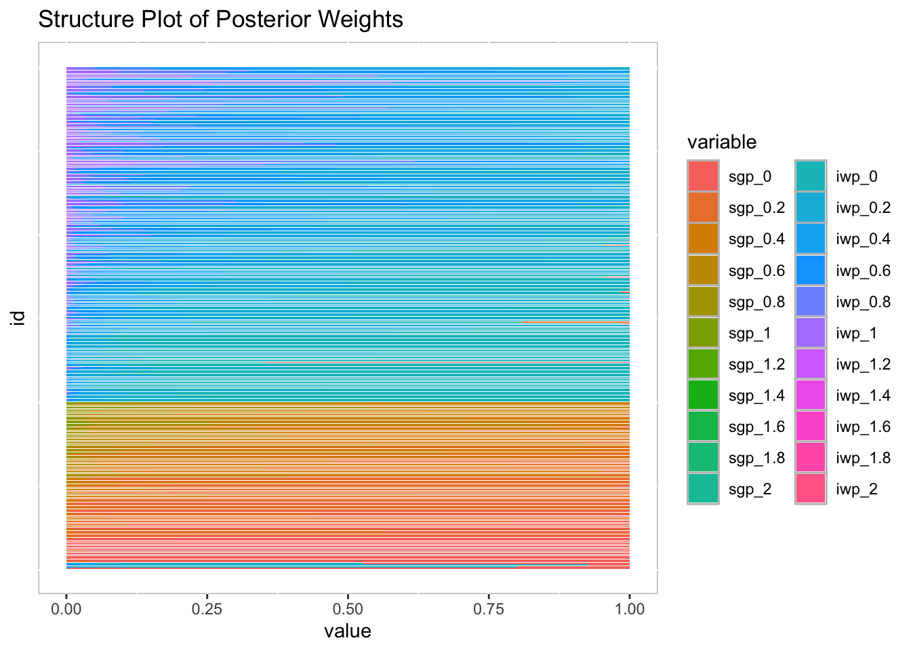
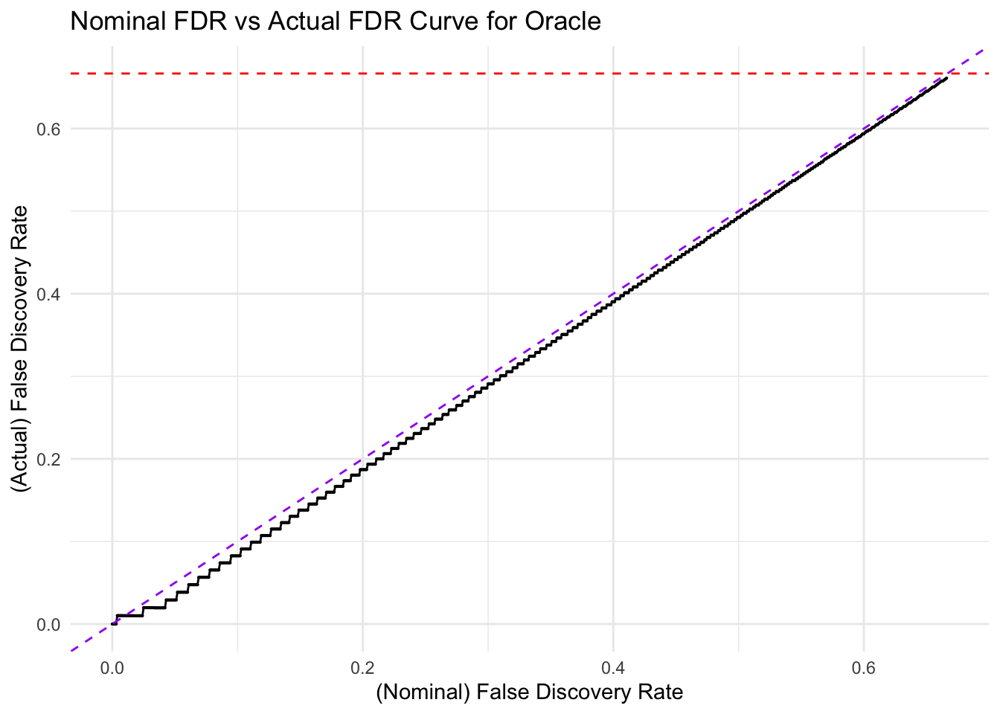
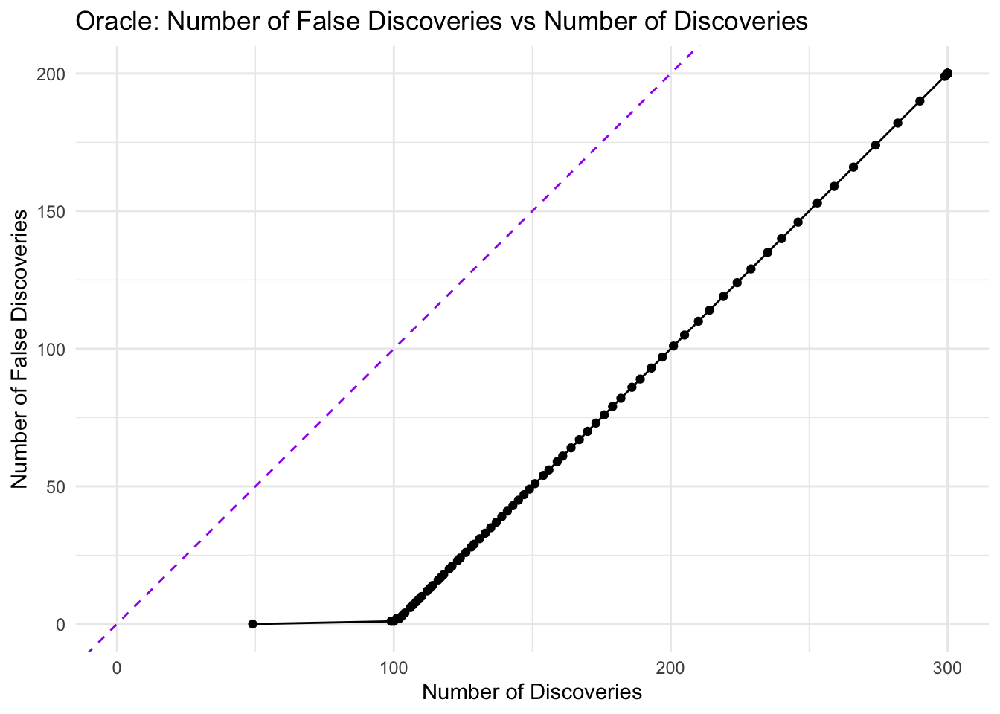

Last updated: 2024-09-16
Checks: 7 0
Knit directory: FASHresultsummary/
This reproducible R Markdown analysis was created with workflowr (version 1.7.1). The Checks tab describes the reproducibility checks that were applied when the results were created. The Past versions tab lists the development history.
Great! Since the R Markdown file has been committed to the Git repository, you know the exact version of the code that produced these results.
Great job! The global environment was empty. Objects defined in the global environment can affect the analysis in your R Markdown file in unknown ways. For reproduciblity it’s best to always run the code in an empty environment.
The command set.seed(20240507) was run prior to running
the code in the R Markdown file. Setting a seed ensures that any results
that rely on randomness, e.g. subsampling or permutations, are
reproducible.
Great job! Recording the operating system, R version, and package versions is critical for reproducibility.
Nice! There were no cached chunks for this analysis, so you can be confident that you successfully produced the results during this run.
Great job! Using relative paths to the files within your workflowr project makes it easier to run your code on other machines.
Great! You are using Git for version control. Tracking code development and connecting the code version to the results is critical for reproducibility.
The results in this page were generated with repository version a16501d. See the Past versions tab to see a history of the changes made to the R Markdown and HTML files.
Note that you need to be careful to ensure that all relevant files for
the analysis have been committed to Git prior to generating the results
(you can use wflow_publish or
wflow_git_commit). workflowr only checks the R Markdown
file, but you know if there are other scripts or data files that it
depends on. Below is the status of the Git repository when the results
were generated:
Ignored files:
Ignored: .DS_Store
Ignored: .Rhistory
Ignored: .Rproj.user/
Ignored: analysis/.DS_Store
Ignored: analysis/.Rhistory
Ignored: code/.DS_Store
Ignored: code/cpp/.DS_Store
Ignored: data/.DS_Store
Ignored: data/expression_data/.DS_Store
Ignored: output/.DS_Store
Ignored: output/example/.DS_Store
Ignored: output/example/figure/
Ignored: output/simulation_pollution/.DS_Store
Ignored: output/simulation_pollution/figure/
Unstaged changes:
Modified: analysis/circadian_sim.Rmd
Deleted: code/cpp/Poisson.o
Deleted: code/cpp/Poisson.so
Deleted: code/cpp/Poisson_expression.o
Deleted: code/cpp/Poisson_expression.so
Deleted: code/cpp/Poisson_just_fixed.o
Deleted: code/cpp/Poisson_just_fixed.so
Deleted: code/cpp/Poisson_just_fixed_expression.o
Deleted: code/cpp/Poisson_just_fixed_expression.so
Modified: thought_process
Note that any generated files, e.g. HTML, png, CSS, etc., are not included in this status report because it is ok for generated content to have uncommitted changes.
These are the previous versions of the repository in which changes were
made to the R Markdown (analysis/circadian_sim_easy.Rmd)
and HTML (docs/circadian_sim_easy.html) files. If you’ve
configured a remote Git repository (see ?wflow_git_remote),
click on the hyperlinks in the table below to view the files as they
were in that past version.
| File | Version | Author | Date | Message |
|---|---|---|---|---|
| html | d634fe3 | AgueroZZ | 2024-09-16 | Build site. |
| Rmd | 3573d41 | AgueroZZ | 2024-09-16 | workflowr::wflow_publish("analysis/circadian_sim_easy.Rmd") |
library(BayesGP)
library(TMB)
library(Matrix)
library(splines)
library(parallel)
library(ggplot2)
library(reshape2)
library(mixsqp)
library(tidyverse)── Attaching core tidyverse packages ──────────────────────── tidyverse 2.0.0 ──
✔ dplyr 1.1.3 ✔ readr 2.1.4
✔ forcats 1.0.0 ✔ stringr 1.5.0
✔ lubridate 1.9.3 ✔ tibble 3.2.1
✔ purrr 1.0.2 ✔ tidyr 1.3.0
── Conflicts ────────────────────────────────────────── tidyverse_conflicts() ──
✖ tidyr::expand() masks Matrix::expand()
✖ dplyr::filter() masks stats::filter()
✖ dplyr::lag() masks stats::lag()
✖ tidyr::pack() masks Matrix::pack()
✖ tidyr::unpack() masks Matrix::unpack()
ℹ Use the conflicted package (<http://conflicted.r-lib.org/>) to force all conflicts to become errorscpp_dir <- paste0(getwd(), "/code/cpp")
fig_dir <- paste0(getwd(), "/output/circadian_sim_easy")
result_dir <- paste0(getwd(), "/output/circadian_sim_easy")
function_dir <- paste0(getwd(), "/code/function")
source(paste0(function_dir, "/functions_fitting_Poisson_circadian_expression.R"))
source(paste0(function_dir, "/functions_sim_Poisson_circadian_expression.R"))
compile(paste0(cpp_dir, "/Poisson_expression.cpp"))Warning in readLines(file): incomplete final line found on
'/Users/ziangzhang/Desktop/FASH/FASHresultsummary/code/cpp/Poisson_expression.cpp'Note: Using Makevars in /Users/ziangzhang/.R/Makevars using C++ compiler: 'Apple clang version 13.1.6 (clang-1316.0.21.2.5)'
using SDK: 'MacOSX12.3.sdk'[1] 0compile(paste0(cpp_dir, "/Poisson_just_fixed_expression.cpp"))Warning in readLines(file): incomplete final line found on
'/Users/ziangzhang/Desktop/FASH/FASHresultsummary/code/cpp/Poisson_just_fixed_expression.cpp'Note: Using Makevars in /Users/ziangzhang/.R/Makevars using C++ compiler: 'Apple clang version 13.1.6 (clang-1316.0.21.2.5)'
using SDK: 'MacOSX12.3.sdk'[1] 0dyn.load(TMB::dynlib(paste0(cpp_dir, "/Poisson_expression")))
dyn.load(TMB::dynlib(paste0(cpp_dir, "/Poisson_just_fixed_expression")))
num_cores <- 4x <- seq(0,4, length.out = 100)
a <- 2*pi
sd_exact <- 1
sd_quasi <- 0.2
sd_np = 1
intercept_sd <- 0.2
boundary_sd <- 0.5
k <- 50
m <- 1
beta_prec <- 1e-10
psd_vec <- seq(0, 1, length.out = 11)
datasets <- list()We simulate the following data sets:
The first \(N_1\) datasets are from quasi-periodic sGP model:
N1 <- 100
sd_fun_draw_prop <- c(0.2, 0.2, 0.15, 0.15, 0.15, 0.15)
sd_fun_draw_vec <- rep(c(0, 0.1, 0.2, 0.3, 0.4, 0.5), times = c(0.2, 0.2, 0.15, 0.15, 0.15, 0.15)*N1)
for(i in 1:N1){
sd_fun_draw <- sd_fun_draw_vec[i]
datasets[[i]] <- simulate_data(type = "v1", x = x, a = a, sd_fun = sd_fun_draw, boundary_sd = 1)
}
# plot 4 dataset
par(mfrow = c(2,2))
for(i in 1:4){
index <- sample(1:N1, 1)
plot(datasets[[index]]$x, datasets[[index]]$y, type = "p", col = "blue", xlab = "x", ylab = "y")
lines(datasets[[index]]$x, exp(datasets[[index]]$f), col = "red", lwd = 2)
}
| Version | Author | Date |
|---|---|---|
| d634fe3 | AgueroZZ | 2024-09-16 |
par(mfrow = c(1,1))The second \(N_2\) datasets are from the Poisson model with no periodic effect:
N2 <- 200
sd_fun_draw_prop <- c(0.2, 0.2, 0.15, 0.15, 0.15, 0.15)
sd_fun_draw_vec2 <- rep(c(0, 0.1, 0.2, 0.3, 0.4, 0.5), times = c(0.2, 0.2, 0.15, 0.15, 0.15, 0.15)*N2)
for(i in (N1+1):(N1+N2)){
sd_fun_draw <- sd_fun_draw_vec2[i-N1]
datasets[[i]] <- simulate_data(type = "iwp", x = x, sd_fun = sd_fun_draw, intercept_sd = intercept_sd, boundary_sd = boundary_sd)
}
# plot 4 dataset
par(mfrow = c(2,2))
for(i in 1:4){
index <- sample((N1+1):(N1+N2), 1)
plot(datasets[[index]]$x, datasets[[index]]$y, type = "p", col = "blue", xlab = "x", ylab = "y")
lines(datasets[[index]]$x, exp(datasets[[index]]$f), col = "red", lwd = 2)
}
| Version | Author | Date |
|---|---|---|
| d634fe3 | AgueroZZ | 2024-09-16 |
par(mfrow = c(1,1))Compute the L matrix
## set up a progress bar
L_vecs <- vector("list", length(datasets))
pb <- txtProgressBar(min = 0, max = length(datasets), style = 3)
for (i in 1:length(datasets)) {
setTxtProgressBar(pb, i)
data <- datasets[[i]]
like_vec1 <- compute_log_likelihood_sBspline_seq(dataset = data,
period = 1,
num_knots = k,
psd_sgp_vector = psd_vec,
pred_step = 1,
betaprec = beta_prec,
log_lib_size = NULL,
m = 1)
like_vec2 <- compute_log_likelihood_ospline_seq(dataset = data,
p = 2,
num_knots = k,
psd_iwp_vector = psd_vec,
pred_step = 1,
betaprec = beta_prec,
log_lib_size = NULL)
L_vecs[[i]] <- c(like_vec1, like_vec2)
}
L_matrix <- do.call(rbind, L_vecs)
save(L_matrix, file = paste0(result_dir, "/L_matrix.rda"))load(paste0(result_dir, "/L_matrix.rda"))
fit.sqp <- mixsqp(L = L_matrix, log = TRUE)Running mix-SQP algorithm 0.3-54 on 300 x 22 matrix
convergence tol. (SQP): 1.0e-08
conv. tol. (active-set): 1.0e-10
zero threshold (solution): 1.0e-08
zero thresh. (search dir.): 1.0e-14
l.s. sufficient decrease: 1.0e-02
step size reduction factor: 7.5e-01
minimum step size: 1.0e-08
max. iter (SQP): 1000
max. iter (active-set): 20
number of EM iterations: 10
Computing SVD of 300 x 22 matrix.
Matrix is not low-rank; falling back to full matrix.
iter objective max(rdual) nnz stepsize max.diff nqp nls
1 +1.834688689e+00 -- EM -- 22 1.00e+00 7.63e-02 -- --
2 +1.809032472e+00 -- EM -- 22 1.00e+00 1.86e-02 -- --
3 +1.802387630e+00 -- EM -- 22 1.00e+00 6.08e-03 -- --
4 +1.799243370e+00 -- EM -- 22 1.00e+00 2.96e-03 -- --
5 +1.797338838e+00 -- EM -- 22 1.00e+00 2.68e-03 -- --
6 +1.796030452e+00 -- EM -- 22 1.00e+00 2.41e-03 -- --
7 +1.795059818e+00 -- EM -- 22 1.00e+00 2.18e-03 -- --
8 +1.794302358e+00 -- EM -- 21 1.00e+00 1.98e-03 -- --
9 +1.793689985e+00 -- EM -- 21 1.00e+00 1.81e-03 -- --
10 +1.793181842e+00 -- EM -- 21 1.00e+00 1.66e-03 -- --
1 +1.792751642e+00 +2.904e-02 21 ------ ------ -- --
2 +1.787775842e+00 +2.458e-03 11 1.00e+00 8.55e-02 12 1
3 +1.787663961e+00 +1.064e-02 12 1.00e+00 3.10e-03 7 1
4 +1.787659796e+00 +3.961e-04 12 1.00e+00 8.07e-04 2 1
5 +1.787659790e+00 +3.834e-07 12 1.00e+00 3.32e-05 2 1
6 +1.787659790e+00 -4.276e-08 12 1.00e+00 5.07e-08 2 1
Optimization took 0.00 seconds.
Convergence criteria met---optimal solution found.numiter <- nrow(fit.sqp$progress)
plot(1:numiter,fit.sqp$progress$objective,type = "b",
pch = 20,lwd = 2,xlab = "SQP iteration",
ylab = "objective",xaxp = c(1,numiter,numiter - 1))
| Version | Author | Date |
|---|---|---|
| d634fe3 | AgueroZZ | 2024-09-16 |
# create prior weight
prior_weight <- data.frame(name = paste0(rep(c("sgp_", "iwp_"), each = length(psd_vec)), psd_vec), prior_weight = fit.sqp$x)
prior_weight name prior_weight
1 sgp_0 0.07012691
2 sgp_0.1 0.05401808
3 sgp_0.2 0.06942097
4 sgp_0.3 0.06752890
5 sgp_0.4 0.00000000
6 sgp_0.5 0.07114683
7 sgp_0.6 0.00394424
8 sgp_0.7 0.00000000
9 sgp_0.8 0.00000000
10 sgp_0.9 0.00000000
11 sgp_1 0.00000000
12 iwp_0 0.11284080
13 iwp_0.1 0.18341235
14 iwp_0.2 0.06457638
15 iwp_0.3 0.13420174
16 iwp_0.4 0.00000000
17 iwp_0.5 0.14986793
18 iwp_0.6 0.01891489
19 iwp_0.7 0.00000000
20 iwp_0.8 0.00000000
21 iwp_0.9 0.00000000
22 iwp_1 0.00000000Compute the posterior:
# Compute the posterior using the likelihood and prior
posterior_matrix <- matrix(0, nrow = nrow(L_matrix), ncol = ncol(L_matrix))
for(i in 1:nrow(L_matrix)){
posterior_matrix[i,] <- exp(L_matrix[i,] - max(L_matrix[i,]) + fit.sqp$x)
posterior_matrix[i,] <- posterior_matrix[i,]/sum(posterior_matrix[i,])
}colnames(posterior_matrix) <- paste0(rep(c("sgp_", "iwp_"), each = length(psd_vec)), psd_vec)The posterior probability of being in class sgp (summing all sgp columns):
posterior_prob <- rowSums(posterior_matrix[, grepl("sgp_", colnames(posterior_matrix))])
head(posterior_prob)[1] 1.0000000 0.3749057 1.0000000 1.0000000 1.0000000 1.0000000plot(posterior_prob, type = "p", col = "blue", xlab = "dataset", ylab = "posterior probability")
| Version | Author | Date |
|---|---|---|
| d634fe3 | AgueroZZ | 2024-09-16 |
posterior_weights_df <- as.data.frame(posterior_matrix)
posterior_weights_df$id <- 1:nrow(posterior_weights_df)
melted_data <- melt(posterior_weights_df, id.vars = "id")
ggplot(melted_data, aes(x = id, y = value, fill = variable)) +
geom_bar(stat = "identity", width = 0.7) + # Adjust bar width if necessary
ggtitle("Structure Plot of Posterior Weights") +
coord_flip() + # Flips the coordinates to make 'Gene' on the y-axis
theme(
axis.text.y = element_blank(),
axis.ticks.y = element_blank(),
panel.background = element_rect(fill = "white", colour = "grey"),
plot.background = element_rect(fill = "white", colour = NA)
)
| Version | Author | Date |
|---|---|---|
| d634fe3 | AgueroZZ | 2024-09-16 |
The local FDR for testing periodicity:
lfdr <- 1 - posterior_prob
lfdr <- ifelse(lfdr < 0, 0, lfdr) # set to 0 if it is negative due to numerical error
lfdr <- ifelse(lfdr > 1, 1, lfdr) # set to 1 if it is greater than 1 due to numerical error
fdr_df <- data.frame(ID = 1:length(lfdr), fdr = lfdr, type = rep(c("P", "NP"), times = c(N1,N2)))
fdr_df <- fdr_df[order(fdr_df$fdr), ] # ordering it
fdr_df$cumulative_fdr <- cumsum(fdr_df$fdr)/seq_along(fdr_df$fdr)
fdr_df$rank <- 1:length(lfdr)Plot the FDR curve:
ggplot(fdr_df, aes(x = 1:length(lfdr), y = cumulative_fdr, col = type)) +
geom_point() +
geom_hline(yintercept = 0.05, linetype = "dashed", color = "purple") +
labs(x = "Ordered Units", y = "Cumulative FDR", col = "Type") +
theme_minimal() +
ggtitle("FASH:Cumulative FDR Plot") +
scale_color_manual(values = c("red", "blue", "green"))
| Version | Author | Date |
|---|---|---|
| d634fe3 | AgueroZZ | 2024-09-16 |
Plot the curve of nominal false discovery rate (threshold) against the actual false discovery rate:
# Calculate true FDR for FASH
threshold_vec <- seq(0, 2/3, by = 0.001)
fdr_vec <- numeric(length(threshold_vec))
for (i in 1:length(threshold_vec)) {
num_discoveries <- sum(fdr_df$cumulative_fdr <= threshold_vec[i])
num_false_discoveries <- sum(fdr_df$cumulative_fdr <= threshold_vec[i] & fdr_df$type == "NP")
fdr_vec[i] <- num_false_discoveries / num_discoveries
}
# Create a data frame for plotting
fdr_df_fash_for_plotting <- data.frame(threshold = threshold_vec, true_fdr = fdr_vec)
# Plot the nominal FDR vs true FDR for FASH
ggplot(fdr_df_fash_for_plotting, aes(x = threshold, y = true_fdr)) +
geom_line() +
geom_point(size = 0.1) +
geom_abline(intercept = 0, slope = 1, linetype = "dashed", color = "purple") +
labs(x = "(Nominal) False Discovery Rate", y = "(Actual) False Discovery Rate") +
theme_minimal() +
geom_hline(yintercept = N2/(N1 + N2), linetype = "dashed", color = "red") +
coord_cartesian(xlim = c(0, 2/3), ylim = c(0, 2/3)) +
ggtitle("Nominal FDR vs Actual FDR Curve for FASH")
| Version | Author | Date |
|---|---|---|
| d634fe3 | AgueroZZ | 2024-09-16 |
threshold_vec <- seq(0, 1, by = 0.01)
num_discoveries_vec <- numeric(length(threshold_vec))
num_false_discoveries_vec <- numeric(length(threshold_vec))
for (i in 1:length(threshold_vec)) {
num_discoveries_vec[i] <- sum(fdr_df$cumulative_fdr <= threshold_vec[i])
num_false_discoveries_vec[i] <- sum(fdr_df$cumulative_fdr <= threshold_vec[i] & fdr_df$type == "NP")
}
num_discoveries_df <- data.frame(threshold = threshold_vec, num_discoveries = num_discoveries_vec, num_false_discoveries = num_false_discoveries_vec)
ggplot(num_discoveries_df, aes(x = (num_discoveries), y = (num_false_discoveries))) +
geom_line() +
geom_point() +
geom_abline(intercept = 0, slope = 1, linetype = "dashed", color = "purple") +
labs(x = "Number of Discoveries", y = "Number of False Discoveries") +
theme_minimal() +
ggtitle("FASH: Number of False Discoveries vs Number of Discoveries") +
coord_cartesian(xlim = c(0, (N1 + N2)), ylim = c(0, (N2)))
| Version | Author | Date |
|---|---|---|
| d634fe3 | AgueroZZ | 2024-09-16 |
threshold_vec <- seq(0, 1, by = 0.0001)
num_discoveries_vec_fash <- numeric(length(threshold_vec))
num_false_discoveries_vec_fash <- numeric(length(threshold_vec))
for (i in 1:length(threshold_vec)) {
num_discoveries_vec_fash[i] <- sum(fdr_df$cumulative_fdr <= threshold_vec[i])
num_false_discoveries_vec_fash[i] <- sum(fdr_df$cumulative_fdr <= threshold_vec[i] & fdr_df$type == "NP")
}
num_discoveries_df_fash <- data.frame(threshold = threshold_vec, num_discoveries = num_discoveries_vec_fash, num_false_discoveries = num_false_discoveries_vec_fash, method = "FASH")
# Calculate the power for FASH
num_discoveries_df_fash$power <- (num_discoveries_df_fash$num_discoveries-num_discoveries_df_fash$num_false_discoveries)/(N1)
# Plot the FDR vs Power
ggplot(num_discoveries_df_fash, aes(x = threshold, y = power, color = method)) +
geom_line() +
# geom_point() +
labs(x = "FDR", y = "Power") +
theme_minimal() +
ggtitle("FDR vs Power for FASH") +
coord_cartesian(xlim = c(0, 1), ylim = c(0, 1))
| Version | Author | Date |
|---|---|---|
| d634fe3 | AgueroZZ | 2024-09-16 |
Compare with the posterior using the oracle Bayes:
Compute the posterior:
# Compute the posterior using the likelihood and prior
posterior_matrix_ob <- matrix(0, nrow = nrow(L_matrix), ncol = ncol(L_matrix))
true_prior <- c((N1/(N1+N2))*sd_fun_draw_prop, rep(0, (length(psd_vec) - length(sd_fun_draw_prop))) , (N2/(N1+N2))*sd_fun_draw_prop, rep(0, (length(psd_vec) - length(sd_fun_draw_prop))))
for(i in 1:nrow(L_matrix)){
posterior_matrix_ob[i,] <- exp(L_matrix[i,] - max(L_matrix[i,]) + log(true_prior))
posterior_matrix_ob[i,] <- posterior_matrix_ob[i,]/sum(posterior_matrix_ob[i,])
}colnames(posterior_matrix_ob) <- paste0(rep(c("sgp_", "iwp_"), each = length(psd_vec)), psd_vec)
posterior_prob_ob <- rowSums(posterior_matrix_ob[, grepl("sgp_", colnames(posterior_matrix_ob))])
head(posterior_prob_ob)[1] 1.0000000 0.2479439 1.0000000 1.0000000 1.0000000 1.0000000plot(posterior_prob_ob, type = "p", col = "blue", xlab = "dataset", ylab = "posterior probability")
| Version | Author | Date |
|---|---|---|
| d634fe3 | AgueroZZ | 2024-09-16 |
posterior_weights_df_ob <- as.data.frame(posterior_matrix_ob)
posterior_weights_df_ob$id <- 1:nrow(posterior_weights_df_ob)
melted_data_ob <- melt(posterior_weights_df_ob, id.vars = "id")
ggplot(melted_data_ob, aes(x = id, y = value, fill = variable)) +
geom_bar(stat = "identity", width = 0.7) + # Adjust bar width if necessary
ggtitle("Structure Plot of Posterior Weights") +
coord_flip() + # Flips the coordinates to make 'Gene' on the y-axis
theme(
axis.text.y = element_blank(),
axis.ticks.y = element_blank(),
panel.background = element_rect(fill = "white", colour = "grey"),
plot.background = element_rect(fill = "white", colour = NA)
)
| Version | Author | Date |
|---|---|---|
| d634fe3 | AgueroZZ | 2024-09-16 |
The local FDR for testing periodicity:
lfdr_ob <- 1 - posterior_prob_ob
lfdr_ob <- ifelse(lfdr_ob < 0, 0, lfdr_ob) # set to 0 if it is negative due to numerical error
lfdr_ob <- ifelse(lfdr_ob > 1, 1, lfdr_ob) # set to 1 if it is greater than 1 due to numerical error
fdr_df_ob <- data.frame(ID = 1:length(lfdr_ob), fdr = lfdr_ob, type = rep(c("P", "NP"), times = c(N1,N2)))
fdr_df_ob <- fdr_df_ob[order(fdr_df_ob$fdr), ] # ordering it
fdr_df_ob$cumulative_fdr <- cumsum(fdr_df_ob$fdr)/seq_along(fdr_df_ob$fdr)
fdr_df_ob$rank <- 1:length(lfdr_ob)
ggplot(fdr_df_ob, aes(x = 1:length(lfdr_ob), y = cumulative_fdr, col = type)) +
geom_point() +
geom_hline(yintercept = 0.05, linetype = "dashed", color = "purple") +
labs(x = "Ordered Units", y = "Cumulative FDR", col = "Type") +
theme_minimal() +
ggtitle("Oracle: Cumulative FDR Plot") +
scale_color_manual(values = c("red", "blue", "green"))
| Version | Author | Date |
|---|---|---|
| d634fe3 | AgueroZZ | 2024-09-16 |
Check calibration of oracle Bayes: the curve of nominal false discovery rate (threshold) against the actual false discovery rate:
# Calculate true FDR for Oracle
threshold_vec <- seq(0, 2/3, by = 0.001)
fdr_vec_ob <- numeric(length(threshold_vec))
for (i in 1:length(threshold_vec)) {
num_discoveries <- sum(fdr_df_ob$cumulative_fdr <= threshold_vec[i])
num_false_discoveries <- sum(fdr_df_ob$cumulative_fdr <= threshold_vec[i] & fdr_df_ob$type == "NP")
fdr_vec_ob[i] <- num_false_discoveries / num_discoveries
}
# Create a data frame for plotting
fdr_df_ob_for_plotting <- data.frame(threshold = threshold_vec, true_fdr = fdr_vec_ob)
# Plot the nominal FDR vs true FDR for Oracle
ggplot(fdr_df_ob_for_plotting, aes(x = threshold, y = true_fdr)) +
geom_line() +
geom_point(size = 0.1) +
geom_abline(intercept = 0, slope = 1, linetype = "dashed", color = "purple") +
labs(x = "(Nominal) False Discovery Rate", y = "(Actual) False Discovery Rate") +
theme_minimal() +
geom_hline(yintercept = N2/(N1 + N2), linetype = "dashed", color = "red") +
coord_cartesian(xlim = c(0, 2/3), ylim = c(0, 2/3)) +
ggtitle("Nominal FDR vs Actual FDR Curve for Oracle")
| Version | Author | Date |
|---|---|---|
| d634fe3 | AgueroZZ | 2024-09-16 |
threshold_vec <- seq(0, 1, by = 0.01)
num_discoveries_vec_ob <- numeric(length(threshold_vec))
num_false_discoveries_vec_ob <- numeric(length(threshold_vec))
for (i in 1:length(threshold_vec)) {
num_discoveries_vec_ob[i] <- sum(fdr_df_ob$cumulative_fdr <= threshold_vec[i])
num_false_discoveries_vec_ob[i] <- sum(fdr_df_ob$cumulative_fdr <= threshold_vec[i] & fdr_df_ob$type == "NP")
}
num_discoveries_df_ob <- data.frame(threshold = threshold_vec, num_discoveries = num_discoveries_vec_ob, num_false_discoveries = num_false_discoveries_vec_ob)
ggplot(num_discoveries_df_ob, aes(x = (num_discoveries), y = (num_false_discoveries))) +
geom_line() +
geom_point() +
geom_abline(intercept = 0, slope = 1, linetype = "dashed", color = "purple") +
labs(x = "Number of Discoveries", y = "Number of False Discoveries") +
theme_minimal() +
ggtitle("Oracle: Number of False Discoveries vs Number of Discoveries") +
coord_cartesian(xlim = c(0, (N1 + N2)), ylim = c(0, (N2)))
| Version | Author | Date |
|---|---|---|
| d634fe3 | AgueroZZ | 2024-09-16 |
threshold_vec <- seq(0, 1, by = 0.0001)
num_discoveries_vec_ob_fash <- numeric(length(threshold_vec))
num_false_discoveries_vec_ob_fash <- numeric(length(threshold_vec))
for (i in 1:length(threshold_vec)) {
num_discoveries_vec_ob_fash[i] <- sum(fdr_df_ob$cumulative_fdr <= threshold_vec[i])
num_false_discoveries_vec_ob_fash[i] <- sum(fdr_df_ob$cumulative_fdr <= threshold_vec[i] & fdr_df_ob$type == "NP")
}
num_discoveries_df_ob_fash <- data.frame(threshold = threshold_vec, num_discoveries = num_discoveries_vec_ob_fash, num_false_discoveries = num_false_discoveries_vec_ob_fash, method = "Oracle")
# Calculate the power for Oracle
num_discoveries_df_ob_fash$power <- (num_discoveries_df_ob_fash$num_discoveries-num_discoveries_df_ob_fash$num_false_discoveries)/(N1)
# Plot the FDR vs Power
ggplot(num_discoveries_df_ob_fash, aes(x = threshold, y = power, color = method)) +
geom_line() +
# geom_point() +
labs(x = "FDR", y = "Power") +
theme_minimal() +
ggtitle("FDR vs Power for Oracle") +
coord_cartesian(xlim = c(0, 1), ylim = c(0, 1))
| Version | Author | Date |
|---|---|---|
| d634fe3 | AgueroZZ | 2024-09-16 |
sessionInfo()R version 4.3.1 (2023-06-16)
Platform: aarch64-apple-darwin20 (64-bit)
Running under: macOS Monterey 12.7.4
Matrix products: default
BLAS: /Library/Frameworks/R.framework/Versions/4.3-arm64/Resources/lib/libRblas.0.dylib
LAPACK: /Library/Frameworks/R.framework/Versions/4.3-arm64/Resources/lib/libRlapack.dylib; LAPACK version 3.11.0
locale:
[1] en_US.UTF-8/en_US.UTF-8/en_US.UTF-8/C/en_US.UTF-8/en_US.UTF-8
time zone: America/Chicago
tzcode source: internal
attached base packages:
[1] parallel splines stats graphics grDevices utils datasets
[8] methods base
other attached packages:
[1] lubridate_1.9.3 forcats_1.0.0 stringr_1.5.0 dplyr_1.1.3
[5] purrr_1.0.2 readr_2.1.4 tidyr_1.3.0 tibble_3.2.1
[9] tidyverse_2.0.0 mixsqp_0.3-54 reshape2_1.4.4 ggplot2_3.5.1
[13] Matrix_1.6-3 TMB_1.9.7 BayesGP_0.1.1
loaded via a namespace (and not attached):
[1] gtable_0.3.4 xfun_0.40 bslib_0.5.1
[4] ks_1.14.1 lattice_0.21-8 tzdb_0.4.0
[7] bitops_1.0-7 vctrs_0.6.4 tools_4.3.1
[10] generics_0.1.3 fansi_1.0.5 cluster_2.1.4
[13] pkgconfig_2.0.3 fds_1.8 KernSmooth_2.23-21
[16] lifecycle_1.0.3 farver_2.1.1 compiler_4.3.1
[19] git2r_0.33.0 munsell_0.5.0 httpuv_1.6.11
[22] htmltools_0.5.6.1 rainbow_3.7 sass_0.4.7
[25] RCurl_1.98-1.12 yaml_2.3.7 pracma_2.4.2
[28] later_1.3.1 pillar_1.9.0 jquerylib_0.1.4
[31] whisker_0.4.1 MASS_7.3-60 cachem_1.0.8
[34] mclust_6.0.0 tidyselect_1.2.0 digest_0.6.33
[37] mvtnorm_1.2-3 stringi_1.7.12 LaplacesDemon_16.1.6
[40] labeling_0.4.3 pcaPP_2.0-3 rprojroot_2.0.3
[43] fastmap_1.1.1 grid_4.3.1 colorspace_2.1-0
[46] cli_3.6.1 magrittr_2.0.3 utf8_1.2.3
[49] withr_2.5.1 scales_1.3.0 promises_1.2.1
[52] timechange_0.2.0 rmarkdown_2.25 deSolve_1.38
[55] workflowr_1.7.1 hms_1.1.3 evaluate_0.22
[58] knitr_1.44 irlba_2.3.5.1 rlang_1.1.1
[61] Rcpp_1.0.11 hdrcde_3.4 glue_1.6.2
[64] fda_6.1.4 rstudioapi_0.15.0 jsonlite_1.8.7
[67] R6_2.5.1 plyr_1.8.9 fs_1.6.3